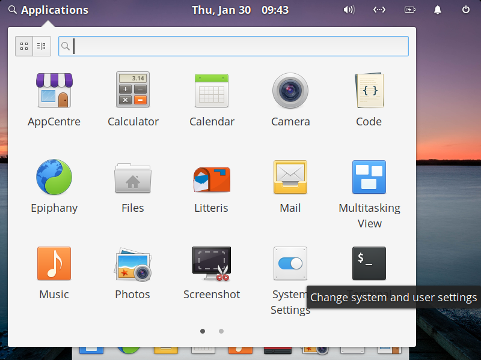
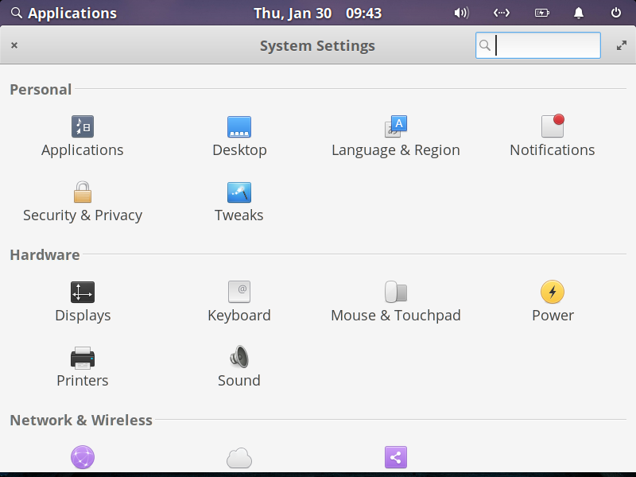
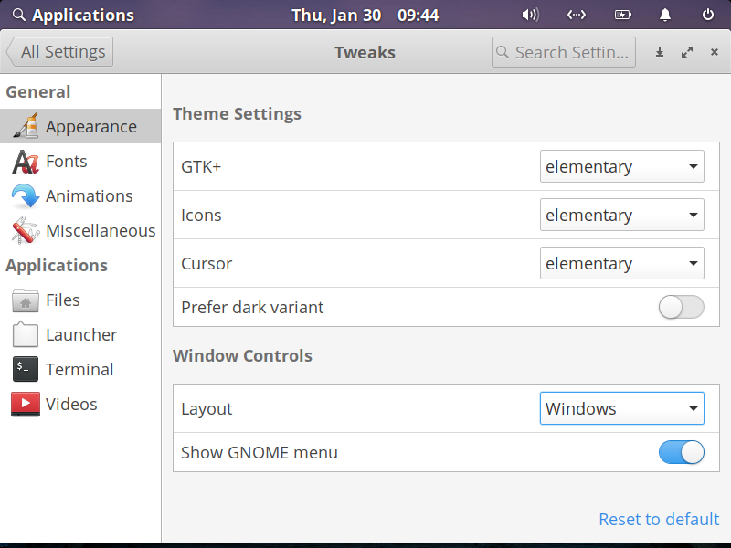
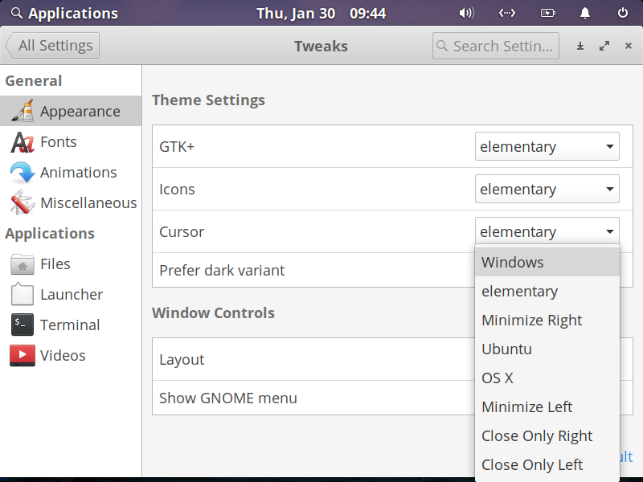

How to install elementary-tweaks
elementary-tweaks is a system settings tool that can be used to personalize your GUI. In order to install it to your system, follow these instructions:
🎞️Enabling PPA:
Personal Package Archives (PPA) enables you to upload Ubuntu source packages to be built and published as an apt repository.
- Open your terminal. (Click here if you don't know how to.)
- Type "sudo apt update" in your terminal.
- Press Enter.
- Type your password if prompted and press Enter.
- Type "sudo apt install software-properties-common"
- Press Enter.
Installing elementary-tweaks:
- Type "sudo add-apt-repository ppa:philip.scott/elementary-tweaks" in your terminal.
- Press Enter.
- Type "apt install elementary-tweaks".
- Press Enter.
Accessing Tweaks in System Settings:
- Click on Applications on the top left to open the App Drawer.
-
Click on System Settings.

-
Click on Tweaks.

- This is where you can personalize what your elementary OS looks like.

For example:
- Click on the drop-down menu named Layout.
- Select Windows.
- You should now be able to see a Windows-style Minimize on the top right corner of every window.
